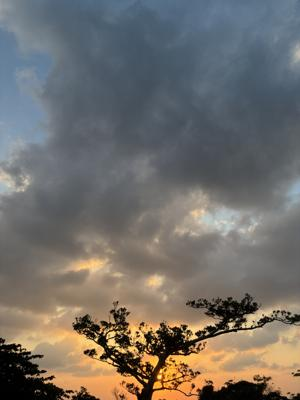
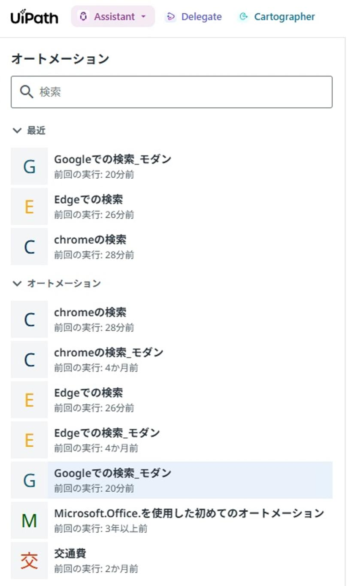
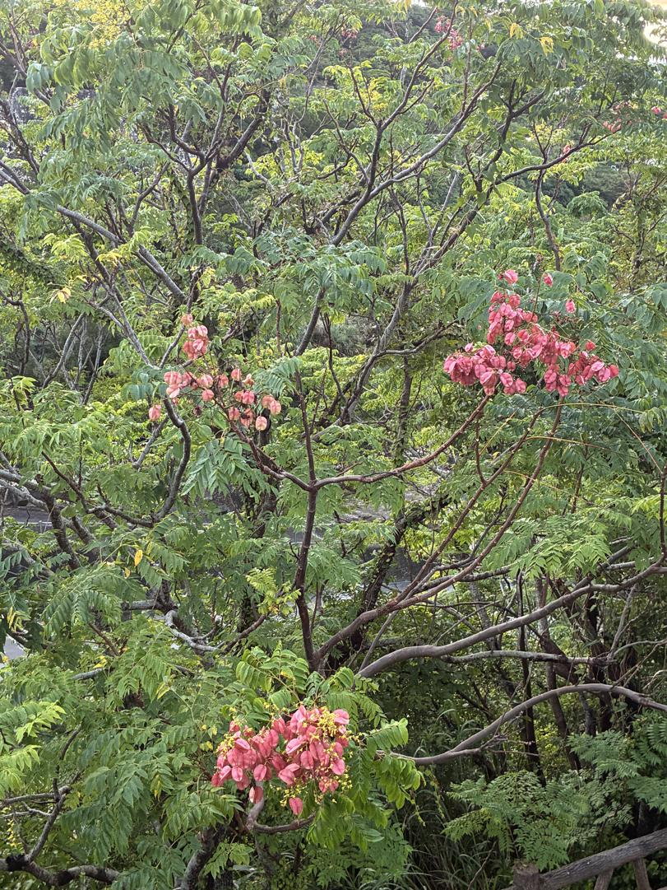
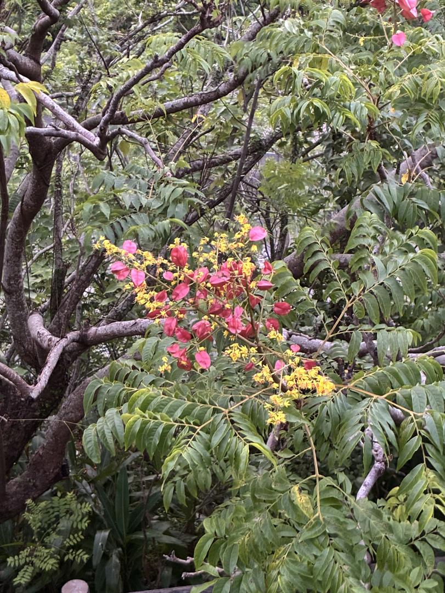

うるがいの話 ある日
最新: 動いたRPA【うるがいの話 ある日】とは 一日だけのプログです
『うるがいの話』の最新一日だけのプログで、通信料が少なく経済的だ。カニの画像をクリックすると全ての日付が載る『うるがいの話』サイトを表示します
|
|
【うるがいの話】 うるがい(ｳﾙｶﾞｲ urugai)とは、『もずくがに』の名前でとても大きくなります。 |
|---|---|
|
|
【カミマヤーの話】 猫のことを方言でマヤーといいます。カミマヤー（kamimayaa）とは、神の猫のことです。 |
|
【たながぁの音楽】 たながぁ（ﾀﾅｶﾞｰ tanagaa）とは手長えびのことで、何種類かあり大きいのは車 エビぐらいになります。 |

|
【ぶながぁの話】 ぶながぁ(ﾌﾞﾅｶﾞｰ bunagaa)とは、赤い髪の毛、赤い身体、そして身長は１ｍ２０ｃｍ ぐらい、川の蟹を食べているの目撃された。場所は沖縄県国頭郡大宜味村のと ある村僕の隣近所に住んでいる爺さんから、聞いた話です。 |
|
|
【ギーマの話】 ギーマ(giima)とは、山原の里山に咲くスズランに似た、 花を付けます。実は食べられます、 気が付くと口の周りが紫になっています。 |
2026年10月15日 (木）動いたRPA
17:13

検索サイトの操作を自動化、ここ何週間もエラーになります。
３つほどのウェブサイト検索自動化、２年前に作成したものの
検索サイトの動作が変化してきてなかな上手く動きません。自
動化しているものの、うまくいかない場合は、無理やり自動化
が進む検索操作を行うことで自動化を助けました。ところが、
ＭｉｃｒｏｓｏｆｔのＥｄｇｅ検索が、対応できませんでした
。ところがです、フトあることをすれば対応できることが判明
しました嬉しいです。なんて、アホなことをしているのでしょ
う、自動化の定義を修正すればいいいのにと！、ところがです
よ、いま利用しているＵｉＰａｔｈのソフト、いつの間にか定
義が、消えるのです。ムカ、としてますが、マ、無料だし。
２０２３年６月に、とても勉強しました。いま、その気力があ
りません、他にやりことがあるからです。マ、そのうち、定義
を作ると思います。仕様書も作成することを忘れずに。

子供が、紅葉をみたとラインから写真を送ってきた。冷たく沖
縄にもあるよと回答した。今時、花が咲く台湾木欒子（タイワ
ンモクゲンジ）です。


UiPathとは、RPA（ロボティック・プロセス・オートメーション）
ツールの一つで、業務の自動化を実現するプラットフォームで
す。繰り返し行う単調な作業をソフトウェアロボットに任せる
ことで、業務効率を向上させるとともに、人為的ミスの削減や
コスト削減を可能にします。
フムフム、でも保守は大変だろうなと思う。